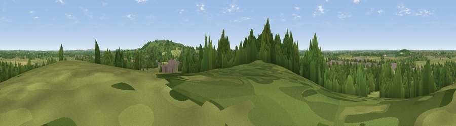

Viewpoint near Arncott
#27943 in England · top 43% of its area beats it · near ArncottThe view, rendered

A 360° render of this exact spot computed from the terrain model, tree cover and land cover — summer colours, afternoon light, calibrated against photographs of famous viewpoints. Real trees, hedges and buildings will differ in detail.
The panorama
Grey silhouette: terrain skyline in each direction (720 bearings, Earth curvature and refraction included). Dashed green: skyline with trees (+15 m) and buildings (+8 m) as obstacles. Blue strip: how far the ground is visible on each bearing.
Where the view opens
Wedge length = distance to the farthest visible ground on that bearing (vegetation-aware). Rings at 10, 25 and 50 km.
What fills the view
50% grassland · 27% woodland · 12% built-up · 10% cropland
Angular shares of the visible panorama (visual magnitude), not map area. Landscape diversity 0.52 (0–1 Shannon).
Key numbers
More beautiful places nearby
The staircase of upgrades: each row has a higher view potential than everything closer. Driving times are estimates from straight-line distance, calibrated against real road routing — check an actual route before setting out.
| Place | Direction | Drive | Score |
|---|---|---|---|
| Viewpoint near Piddington | ESE · 3 km | ~7 min | 61.1 |
| Viewpoint near Boarstall | SE · 3 km | ~7 min | 61.7 |
| Muswell Hill | SE · 3 km | ~8 min | 67.9 |
| Viewpoint near Chinnor | SE · 22 km | ~37 min | 74.5 |
| Coombe Hill Monument | ESE · 25 km | ~41 min | 75.5 |
| Viewpoint near Woolstone | SW · 44 km | ~64 min | 76.7 |
| Viewpoint near Meon Vale | WNW · 52 km | ~74 min | 77.0 |
| Broadway Hill | WNW · 54 km | ~75 min | 77.7 |
51.84978, -1.10675 · source: screening · position refined by local search. Computed location — check access rights before visiting.